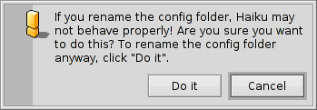
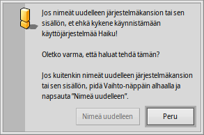

Suomi
Suomi Català
Català Deutsch
Deutsch English
English Español
Español Français
Français Italiano
Italiano Magyar
Magyar Polski
Polski Português
Português Português (Brazil)
Português (Brazil) Română
Română Slovenčina
Slovenčina Svenska
Svenska 中文 ［中文］
中文 ［中文］ Русский
Русский Українська
Українська 日本語
日本語Tiedostojärjestelmäsijoittelu
Haikun tiedostojärjestelmäsijoittelu on aika läpinäkyvä ja yrittää aina käyttää salaamattomia tiedosto- ja kansionimiä, mikä ei jätä käyttäjille arvaamisen tarvetta. Tiedostot ja kansiot, jotka ovat tärkeitä järjestelmän toimimiseksi kunnolla, on suojattu vahingossa tapahtuvalta käsitttelyltä yhdellä näistä hälytyksistä:
 Toinen hälytys ponnahtaa esiin, jos yrität nimetä uudelleen tai poistaa jotain järjestelmähierarkiasta. Tässä painiketta on napsautettava vain, jos pidät -näppäintä alhaalla.
Yleensä käynnistystaltion juurihakemistosta erkanee kaksi haaraa:
| /boot/system/ | Sisältää järjestelmätiedostot ja kaikkien käyttäjien jakamat sovellukset/pakkaukset. | |
| /boot/home/ | Tämä on henkilökohtainen kansiosi, jossa säilytät tietojasi ja asetuksiasi sekä sovelluksia/pakkauksia, joita ei jaeta muiden käyttäjien kanssa. |
Niin kauan kuin Haiku ei ole monikäyttäjäjärjestelmä, erolla jaettujen ja ei-jaettujen sovellusten/pakkausten välillä ei ole näkyvää vaikutusta, koska on vain yksi käyttäjä yhdellä home-kansiolla. Mutta koska tulevaisuudessa on tuki useammalle kuin yhdelle käyttäjälle, on järkevää oppia oikea tapa alusta alkaen.
 Järjestelmäkansio - /boot/system/
Järjestelmäkansio - /boot/system/
Haikun edeltäjässä BeOS-käyttöjärjestelmässä tämä kansio oli nimeltään /boot/beos/. Saatat yhä löytää sen joissakin vanhemmissa dokumenteissa (esimerkiksi alkuperäisessä BeBook-kirjassa).
Useimmat kansion /boot/system/ sisällä olevat kansiot ovat kirjoitussuojattuja, mikä on järkevää, koska ne sisältävät tiedostoja, jotka ovat välttämättömiä Haikun toimimiseksi oikein ja siksi niiden on oltava turvassa (vanhingossa tapahtuvalta) muuttamiselta. Ainoat käyttäjän kirjoitettavissa olevat kansiot ovat:
| /boot/system/cache/ | Sisältää välimuistitiedostoja ja tilapäisen kansion, joka on linkitetty osoitteeseen /tmp/. | |
| /boot/system/non-packaged/ | Sisältää hierarkian tiedostoille, jotka eivät ole osa pakkauksesta .hpkg (luultavasti vanhoja BeOS-arkistotiedostoja). | |
| /boot/system/packages/ | Paitsi Haikun järjestelmäpakkauksia, voit lisätä ja poistaa pakkauksia, jotka on jaettu kaikkien käyttäjien kesken. | |
| /boot/system/settings/ | Sisältää järjestelmänlaajuisia asetuksia. | |
| /boot/system/var/ | Sisältää lokitiedostoja kuten syslog (tärkeä vianjäljityksessä) ja on oletussijainti näennäismuistitiedostolle. |
Katso lisätietoja kansioista packages ja non-packaged aiheesta Sovellukset.
Kotikansio - /boot/home/
Tämä kansio kuuluu sinulle. Tässä voit luoda ja poistaa tiedostoja ja kansioita halusi mukaan. (Muuten tilde-merkki (”~”) on oikotie kotihakemistoon, joten sinun ei tarvitse aina kirjoitta ”/boot/home/” Pääteikkunassa.)
Ne tiedostot, jotka haluat tulevaisuudessa jakaa monikäyttäjäympäristössä muiden käyttäjien kanssa on laitettava kansion /boot/home/ ulkopuolelle. Esimerkiksi voit luoda kansion /boot/all-users/ ja laittaa materiaalin sinne.
| ~/Desktop/ | Säilyttää työpöytäsi tiedostot. Kaksoisnapsautus ei avaa sitä, koska se on jo aina näkyvissä. Kun avoin ikkuna sattuu peittämään tiedostosi, vaihda nopeasti toiseen Työtila-ikkunaan. Tietysti siirtyminen alaspäin hiiren kakkospainikkeella on myös mahdollista. | |
| ~/mail/ | Tämä on sähköpostiviestiesi oletussijainti. | |
| ~/people/ | Tämä on yhteystietotiedostojesi oletussijainti, katso Ihmiset. | |
| ~/queries/ | Kyselyt tallennetaan tähän, oletuksella tilapäisesti 7 päivää. |
Kansio /boot/home/config/ on erityinen: aivan kuin /boot/system/ se on enimmäksen paketinhallinnan alainen ja siksi kirjoitussuojattu. Se myös sisältää nämä samanlaiset kirjoitussuojatut kansiot:
| ~/config/packages/ | Tässä voit lisätä/poistaa pakkauksia, joita ei ole jaettu kaikkien käyttäjien kanssa. | |
| ~/config/non-packaged/ | Sisältää hierarkian tiedostoille, jotka eivät ole osa pakkausta .hpkg (luultavasti vanhasta BeOS-arkistotiedostosta) ja joita ei ole jaettu kaikkien käyttäjien kesken. | |
| ~/config/settings/ | Tämä kansio sisältää asetuksia kaikkiin sovelluksiin ja muutamia järjestelmän asetuksia. Jotkut sovellukset käsittelevät asetuksiaan omissa alikansioisssa, toiset laittavat yksinkertaisesti asetustiedostonsa tänne. |
Katso lisätietoja kansioista packages ja non-packaged aiheesta Sovellukset.
Tässä on lisää kiinnostavia ~/config/settings-kansion alikansioita:
| boot/ | Tämä kansio on paikka Käyttäjäskripteille, jotka suoritetaan ennen käynnistystä tai sammuttamista tai niiden jälkeen. | |
| boot/launch/ | Linkit ohjelmiin tai asiakirjoihin tässä kansiossa käynnistetään automaattisesti jokaisen käynnistyksen yhteydessä. | |
| beos_mime/ | Tässä MIME-tietokannassa Haiku seuraa kaikkia eri tiedostotyyppejä ja niiden asetuksia. | |
| deskbar/menu/ | Kopioituna tai linkitetynä kansioon files/folders/queries tämä kansio ilmaantuu Työpöytäpalkkivalikkoon. | |
| kernel/drivers/ | Yksi asetustiedosto saattaa olla kiinnostava: kernel tarjoaa joitakin alemman tason asetuksia kuten SMP:n ottamisen pois käytöstä, sarjaporttivianjäljityksen aktivoinnin tai kehittyneen virranhallinnan (APM) käyttöönoton. Voit aktivoida asetusrivin poistamalla kommenttimerkin ”#” rivin alusta. Ole varovainen tässä! | |
| Tracker/ | Paitsi Seuraajan eri asetustiedostoja, tässä on joitakin kiinnostavia alikansioita: | |
| DefaultFolderTemplate/ | Näyttää ja järjestää kaikki attribuutit ja ikkunakoot haluamallasi tavalla. Jokainen uusi luomasi kansio käyttää sitä mallinteena. | |
| DefaultQueryTemplates/ | Voit määritellä kyselytulosikkunan asettelun tietyille tiedostotyypeille. Katso aihe Kysely: Tulosikkuna. | |
| Go/ | Laita linkkejä suosikkipaikkaasi tässä tehdäksesi käytettäväksi esimerkiksi paneelien avaamisessa ja sulkemisessa. Katso aihe Haiku graafinen käyttöliittymä: Suosikit ja äskettäiset kansiot. | |
| Tracker New Template/ | Lisää mallinne jokaiselle tiedostotyypille, joka on käytettävissä Seuraajan -valikossa. Katso aihe Seuraaja: Työskentely tiedostoilla. |